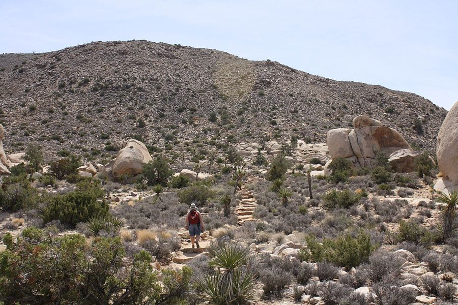
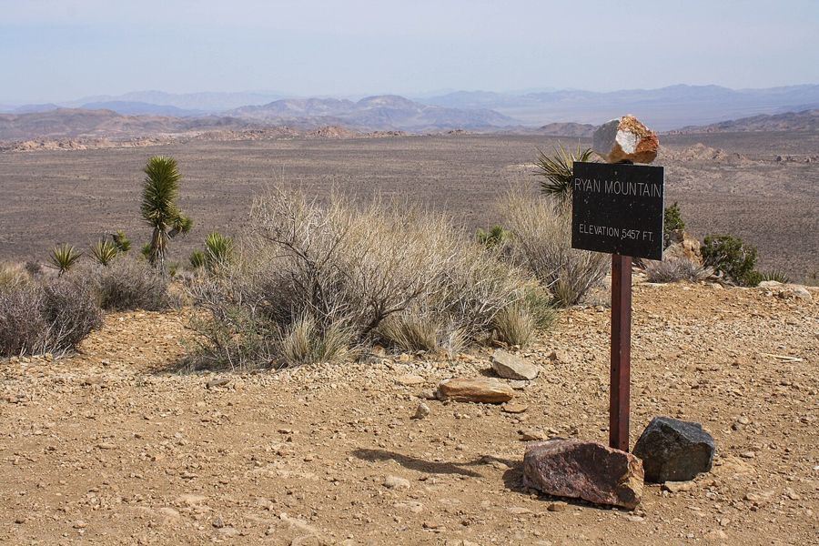

The route starts on Park Boulevard in Joshua Tree National Park. The trail climbs steadily over open desert.
Photo: Bernard Gagnon · CC BY-SA 3.0 · Wikimedia Commons

You have reached the summit of Ryan Mountain, about 5,460 feet up, with views over Joshua Tree.
Photo: Bernard Gagnon · CC BY-SA 3.0 · Wikimedia Commons